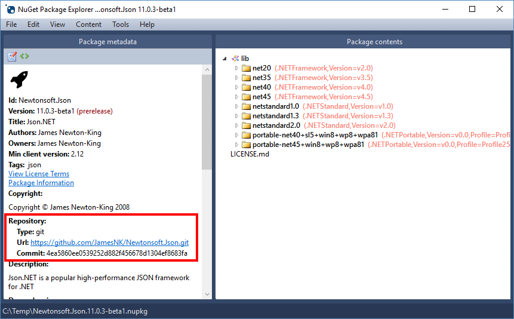

SourceLink
SourceLink is a technology that enables source code debugging of .NET assemblies from NuGet by developers. When creating a NuGet package you use the SourceLink tooling to embed source control metadata inside assemblies and the package. Developers who download the package and have SourceLink enabled in Visual Studio can step into the source code using the source control metadata to create a great debugging experience.
Using SourceLink
Instructions for using SourceLink can be found on the SourceLink GitHub repository.
You can use NuGet Package Explorer to confirm SourceLink metadata has been successfully embedded in the package:

✓ CONSIDER using SourceLink to add source control metadata to your assemblies and NuGet package.
✓ CONSIDER including PDB files in the NuGet package.